France – Le Musée imaginaire: Stamps and Maximum Cards
Six artists, six stamps and six maximum cards
The French art stamp series began in 1961 and brought a remarkably diverse museum of art into the postal world. This second selection pairs six stamps issued between 1962 and 1980 with their illustrated maximum cards. A maximum card brings together an illustrated postcard, a postage stamp on its picture side and a cancellation related to the subject. Their concordance is the essence of maximaphily. Here the larger illustrations invite comparison with the miniature engraved versions.
Albrecht Dürer · Peter Paul Rubens · Édouard Manet · Edgar Degas · Pierre-Auguste Renoir · Marc Chagall
Albrecht Dürer 1471–1528
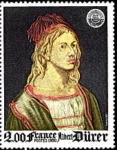
A central figure of the Northern Renaissance, Dürer of Nuremberg combined meticulous observation with Italian Renaissance ideas of proportion and perspective. His engravings and woodcuts circulated widely across Europe.
The stamp reproduces a detail of his youthful self-portrait of 1498, while the card shows the larger composition, including the artist’s elegant costume.
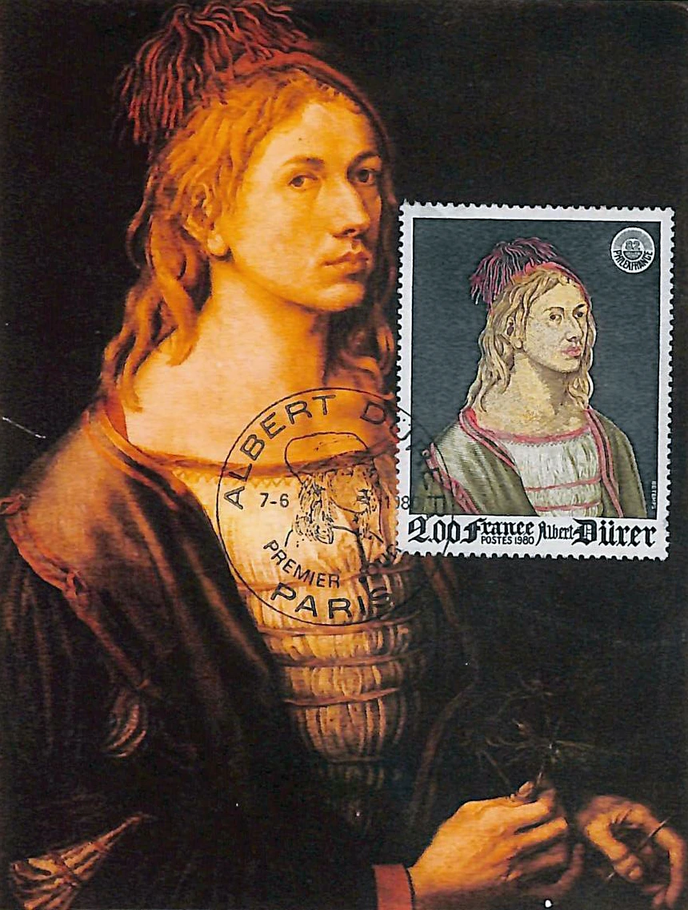
Peter Paul Rubens 1577–1640
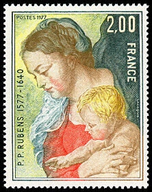
The Flemish Baroque master worked in Antwerp and at European courts. His dynamic compositions, rich colour and expressive figures made him one of the most influential painters of his century.
The stamp isolates a tender image of the Virgin and Child. The card places the motif within a broader composition reproduced in monochrome.
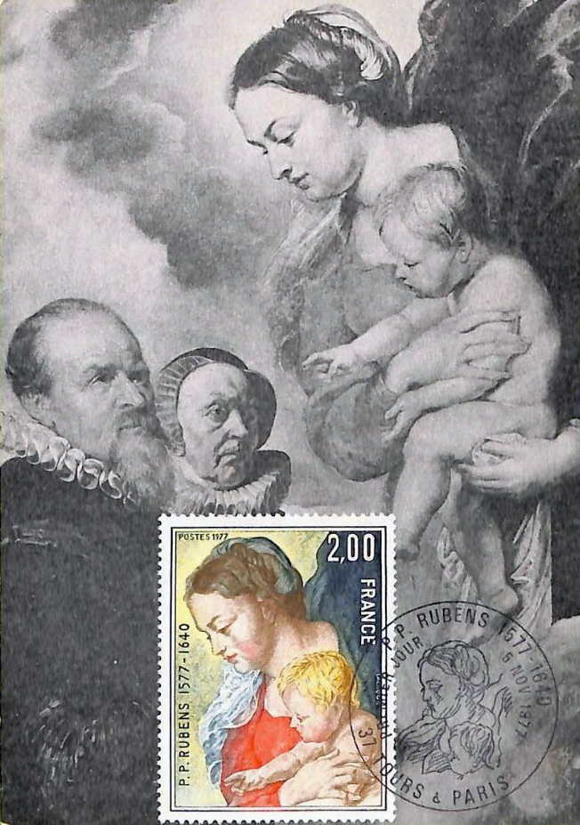
Édouard Manet 1832–1883
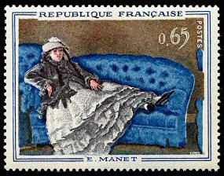
Manet challenged academic conventions through his direct brushwork and modern subjects. Although closely associated with the Impressionists, he maintained an independent artistic identity.
Madame Manet on a Blue Sofa shows the artist’s wife in an intimate domestic setting. The card and stamp make the contrast between the blue upholstery and pale dress particularly striking.
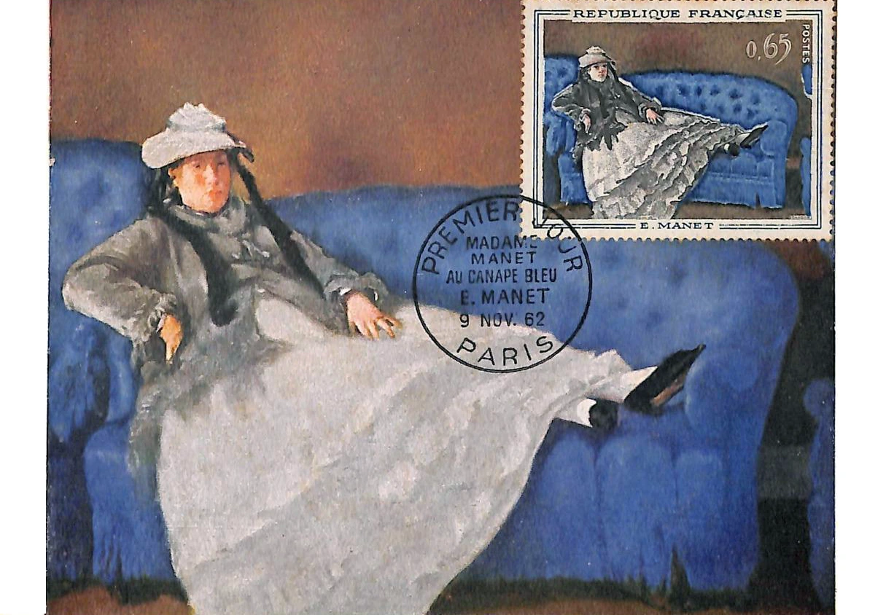
Edgar Degas 1834–1917
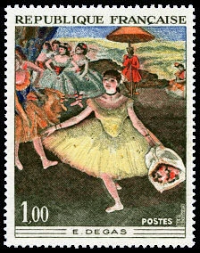
Degas exhibited with the Impressionists but was especially interested in drawing, movement and unusual viewpoints. His ballet scenes explore the discipline and everyday life behind performance.
The colourful dancers in the stamp and card demonstrate his interest in gesture, costume and spatial arrangement.
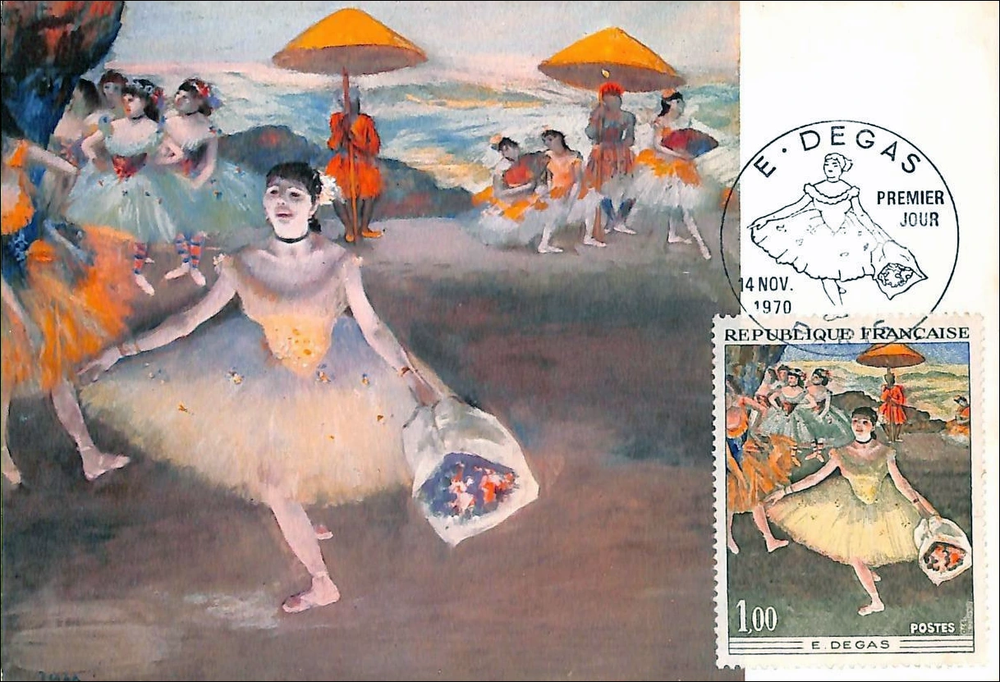
Pierre-Auguste Renoir 1841–1919
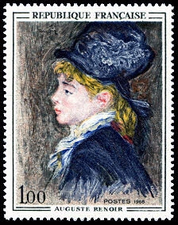
A founding figure of Impressionism, Renoir became celebrated for luminous colour, portraits and scenes of sociability. His later work increasingly explored classical form.
The portrait of a young woman in a dark hat shows the painter’s sensitivity to complexion and soft transitions of colour. The card allows the viewer to compare the painted surface with its engraved interpretation.
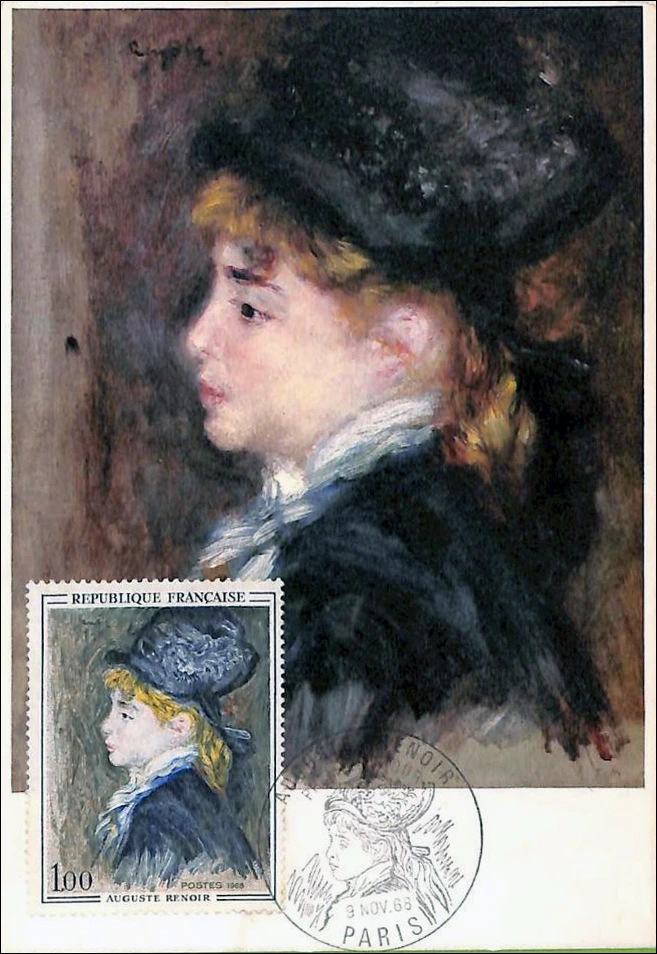
Marc Chagall 1887–1985
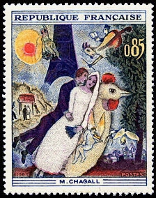
Born in Vitebsk, Chagall developed a personal pictorial language drawing on Jewish cultural traditions, memory and fantasy. Much of his career unfolded in France.
The bridal figures, brilliant colours and dreamlike imagery of the stamp and card evoke Chagall’s world of love and imagination.
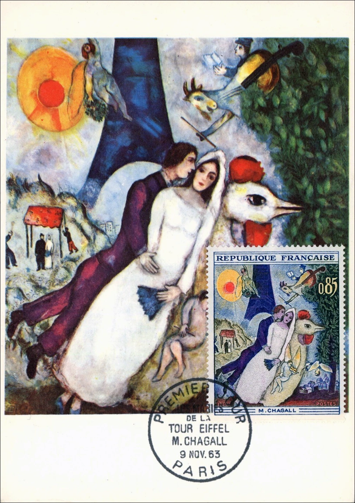
From the Renaissance to modern art
These six pairs reveal how the French art series crossed national and stylistic boundaries. The maximum cards complement the stamps by bringing the original compositions and the engravers’ interpretations into a single visual encounter.
Further reading: Le Musée imaginaire – Stamps and First-Day Covers · The French Art Stamp Series
Published November 27, 2026 · Victor Manta, USA.